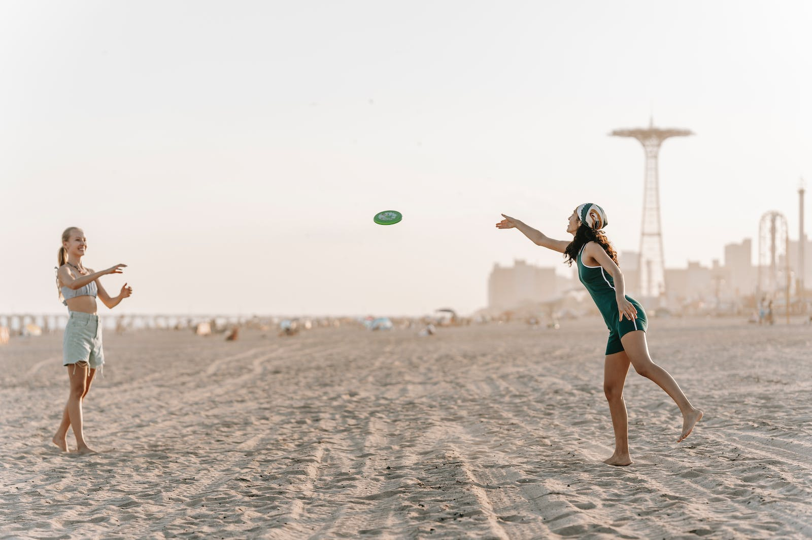
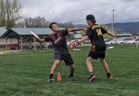
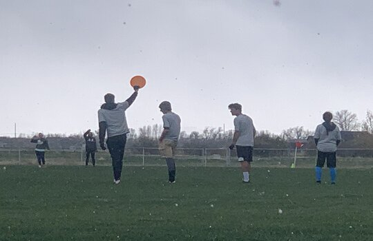

1 / 3

2 / 3

3 / 3

Ultimate Frisbee is a team sport that is rapidly growing in popularity. Its a great game for any occasion; with your friends on the beach, playing with family in the backyard, or on a proffesional team.
 This website is to be an all in one stop for getting started or getting back into Ultimate Frisbee. If you need equipment, or people to play with, or some strategies to help you get better at the game, we have it all!